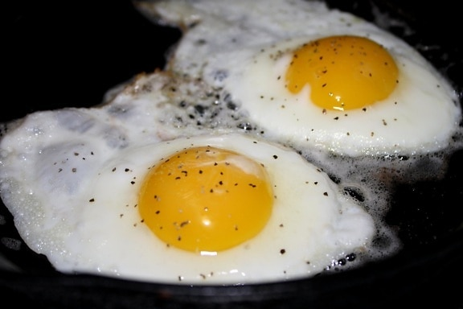

Strogonoff Recipe

Description
Use your air fryer to fry eggs if you are in a hurry and need a quick on-the go-breakfast. Cut and shape your foil the night before and let your air fryer do the work for you while your coffee brews in the morning.
No ramekin required! If you increase your foil size to 8x10 inches you can cook 2 eggs at a time
Ingredients
- aluminum foil
- cooking spray
- 1 large egg
- salt and freshly ground black pepper to taste
Steps
- Preheat an air fryer to 380 degrees F (193 degrees C).
- Shape a 4x5-inch piece of foil into a circular shape leaving the bottom flat with edges curled inward to form a bowl. Spray the bottom of the bowl with non-stick cooking spray. Set foil bowl into the air fryer basket.
- Crack egg into the center of the foil. Cook for 4 minutes. Remove foil bowl from the basket and season with salt and pepper to taste.